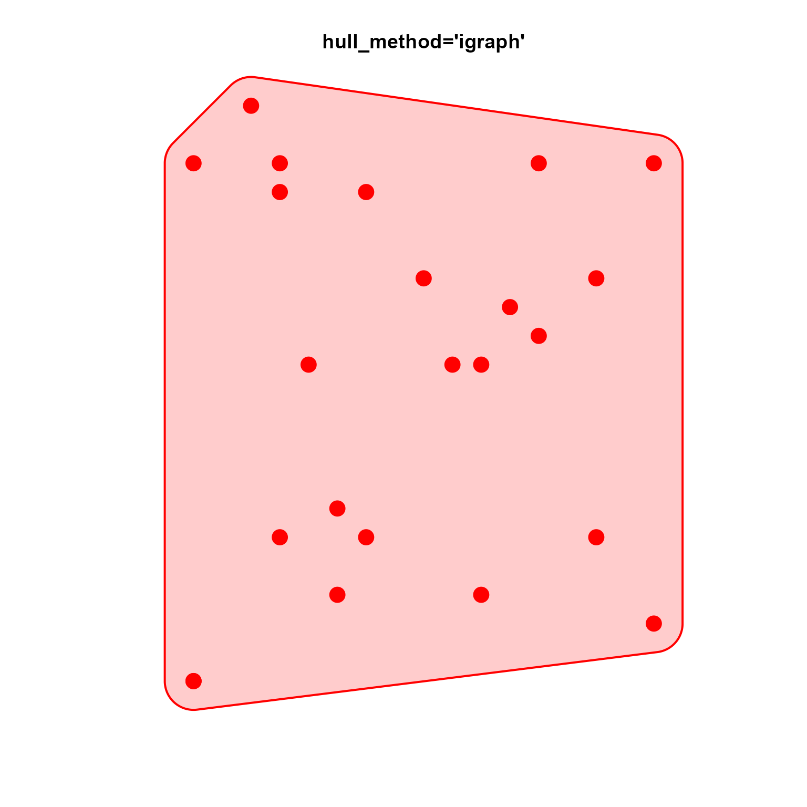
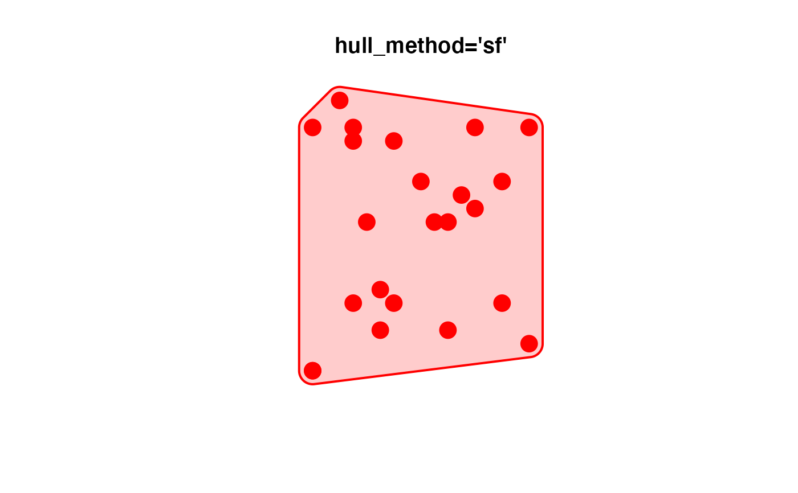
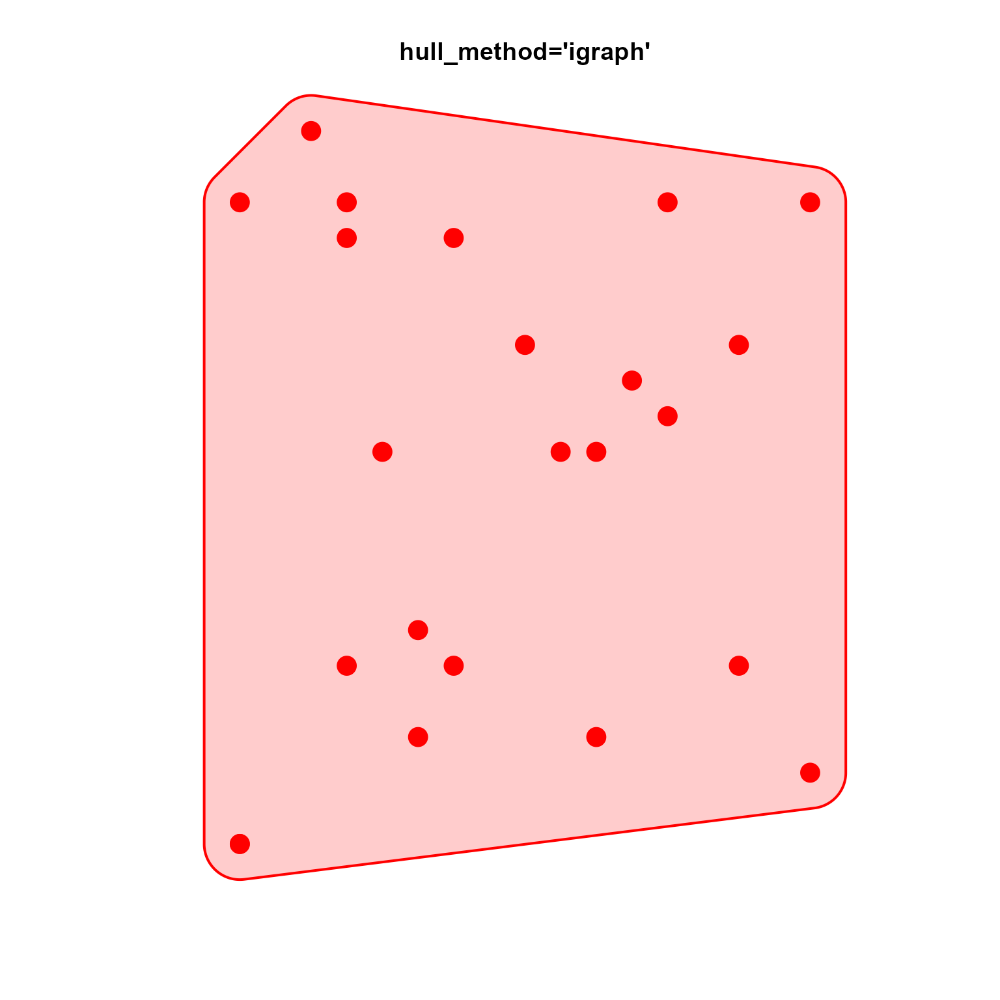
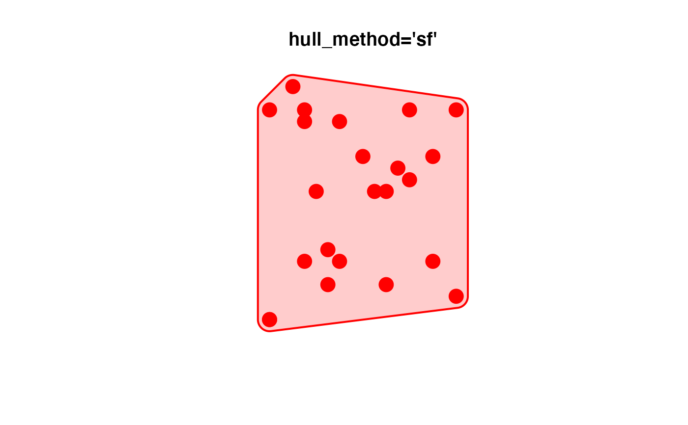

Make alpha hull from points
make_point_hull(
x,
expand = 0.1,
buffer = NULL,
alpha = NULL,
seed = 123,
col = "#FF000033",
border = "#FF0000FF",
lwd = 2,
lty = 1,
max_iterations = 10,
do_plot = FALSE,
add = FALSE,
hull_method = c("default", "alphahull", "igraph", "sf", "chull"),
smooth = TRUE,
shape = 1/2,
label = NULL,
label_preset = "bottom",
label_adj_preset = label_preset,
verbose = FALSE,
...
)Arguments
- x
numericmatrix with 2 columns that contains the coordinate of each point.- expand
numericvalue indicating the buffer width around each point, scaled based upon the total range of coordinates, used only whenbufferis not supplied.- buffer
numericvalue indicating the absolute buffer width around each point. This value is used if provided, otherwiseexpandis used to derive a value forbuffer.- alpha
numericvalue passed toalphahull::ashape()when hull_method is"alphahull". This value determines the level of detail of the resulting hull.- seed
numericseed used withset.seed()to define reproducible behavior.- lwd, lty
line width and line type parameters, respectively.
- max_iterations
integernumber of attempts to callalphahull::ashape()with varying values ofalpha. Each iteration checks to confirm the resulting polygon includes all input points.- do_plot
logicalindicating whether to plot the polygon output.- add
logicalused whendo_plot=TRUEto indicate whether the hull should be drawn onto an existing plot device, or whether to open a new plot prior to drawing the hull.- hull_method
characterstring indicating the hull method to use:"default"- will use"alphahull"if thealphahullR package is available."alphahull"- usealphahull::ashape()which is the preferred method, in fact the only available option that will allow a concave shape in the output."igraph"- calls hidden functionigraph:::convex_hull()as used when drawingmark.groupsaround grouped nodes."sf"- callssf::st_convex_hull(), with same effective output as"igraph"."chull"- callsgrDevices::chull(), again with same effective output as"igraph", but with benefit of not incurring additional R package dependencies.
- smooth
logicalindicating whether to smooth the final polygon usinggraphics::xspline().- verbose
logicalindicating whether to print verbose output.- ...
additional arguments are ignored.
- color, border
charactercolors used whendo_plot=TRUEto draw the resulting hull polygon.
Value
numeric matrix with polygon coordinates, where
each polygon is separated by one row that contains NA
values. This output is sufficient for vectorized plotting
in base R graphics using graphics::polygon().
Details
This function makes an alpha hull around points, calling
alphahull::ashape() then piecing together the somewhat
random set of outer edges into a coherent polygon.
See also
Other jam utility functions:
avg_angles(),
avg_colors_by_list(),
call_fn_ellipsis_deprecated(),
cell_fun_bivariate(),
collapse_mem_clusters(),
colorRamp2D(),
deconcat_df2(),
display_colorRamp2D(),
enrichList2geneHitList(),
filter_mem_genes(),
filter_mem_sets(),
find_colname(),
get_igraph_layout(),
gsubs(),
handle_igraph_param_list(),
isColorBlank(),
make_legend_bivariate(),
mem_find_overlap(),
order_colors(),
rank_mem_clusters(),
rotate_coordinates(),
subgraph_jam(),
subset_mem(),
summarize_node_spacing(),
xyAngle()
Examples
set.seed(12)
n <- 22
xy <- cbind(x=sample(seq_len(n), size=n, replace=TRUE),
y=sample(seq_len(n), size=n, replace=TRUE));
xy <- rbind(xy, xy[1,,drop=FALSE])
x4 <- sf::st_multipoint(xy)
if (jamba::check_pkg_installed("alphahull")) {
plot(x4, col="red", pch=20, cex=3,
main="hull_method='alphahull'")
phxy <- make_point_hull(x=xy, expand=0.05, do_plot=TRUE,
hull_method="alphahull",
add=TRUE, xpd=TRUE)
}
 plot(x4, col="red", pch=20, cex=3,
main="hull_method='chull'")
phxy2 <- make_point_hull(x=xy, expand=0.05, do_plot=TRUE,
add=TRUE, verbose=TRUE, xpd=TRUE, hull_method="chull")
plot(x4, col="red", pch=20, cex=3,
main="hull_method='chull'")
phxy2 <- make_point_hull(x=xy, expand=0.05, do_plot=TRUE,
add=TRUE, verbose=TRUE, xpd=TRUE, hull_method="chull")
 #> ## (14:04:02) 06Jun2023: make_point_hull(): calculated alpha: 10
plot(x4, col="red", pch=20, cex=3,
main="hull_method='igraph'")
phxy2 <- make_point_hull(x=xy, expand=0.05, do_plot=TRUE,
add=TRUE, verbose=TRUE, xpd=TRUE, hull_method="igraph")

#> ## (14:04:02) 06Jun2023: make_point_hull(): calculated alpha: 10
plot(x4, col="red", pch=20, cex=3,
main="hull_method='sf'")
phxy2 <- make_point_hull(x=xy, expand=0.05, do_plot=TRUE,
add=TRUE, verbose=TRUE, xpd=TRUE, hull_method="sf")

#> ## (14:04:02) 06Jun2023: make_point_hull(): calculated alpha: 10
#> ## (14:04:02) 06Jun2023: make_point_hull(): calculated alpha: 10
plot(x4, col="red", pch=20, cex=3,
main="hull_method='igraph'")
phxy2 <- make_point_hull(x=xy, expand=0.05, do_plot=TRUE,
add=TRUE, verbose=TRUE, xpd=TRUE, hull_method="igraph")

#> ## (14:04:02) 06Jun2023: make_point_hull(): calculated alpha: 10
plot(x4, col="red", pch=20, cex=3,
main="hull_method='sf'")
phxy2 <- make_point_hull(x=xy, expand=0.05, do_plot=TRUE,
add=TRUE, verbose=TRUE, xpd=TRUE, hull_method="sf")

#> ## (14:04:02) 06Jun2023: make_point_hull(): calculated alpha: 10